十二、质谱法（122题）
一、选择题 ( 共35题 )
1. 2 分 (1069)
已知某化合物的分子式为 C8H10，在质谱图上出现 m/z 91的强峰，则该化合物可
能是： ( )
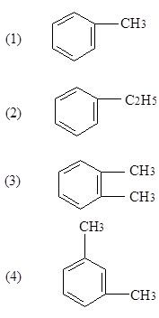
2. 2 分 (1070)
试指出下面哪一种说法是正确的？ ( )
(1) 质量数最大的峰为分子离子峰
(2) 强度最大的峰为分子离子峰
(3) 质量数第二大的峰为分子离子峰
(4) 上述三种说法均不正确
3. 2 分 (1071)
下列化合物含 C、H或O、N，试指出哪一种化合物的分子离子峰为奇数？( )
(1) C6H6 (2) C6H5NO2 (3) C4H2N6O (4) C9H10O2
4. 2 分 (1115)
下列化合物中分子离子峰为奇数的是 ( )
(1) C6H6 (2) C6H5NO2 (3) C6H10O2S (4) C6H4N2O4
5. 2 分 (1116)
在溴己烷的质谱图中，观察到两个强度相等的离子峰，最大可能的是：( )
(1) m/z 为 15 和 29 (2) m/z 为 93 和 15
(3) m/z 为 29 和 95 (4) m/z 为 95 和 93
6. 2 分 (1611)
在C2H5F中, F对下述离子峰有贡献的是 ( )
(1) M (2) M+1 (3) M+2 (4) M及M+2
7. 2 分 (1612)
一个酯的质谱图有m/z74(70%)的强离子峰,下面所给结构中哪个与此观察值最为一致?
( )
(1) CH3CH2CH2COOCH3 (2) (CH3)2CHCOOCH3
(3) CH3CH2COOCH2CH3 (4) (1)或(3)
8. 2 分 (1613)
某化合物分子式为C6H14O, 质谱图上出现m/z59(基峰)m/z31以及其它 弱峰m/z73， m/z87和m/z102. 则该化合物最大可能为 ( )
(1) 二丙基醚 (2) 乙基丁基醚 (3) 正己醇 (4) 己醇-2
9. 2 分 (1614)
某胺类化合物, 分子离子峰其M=129, 其强度大的m/z58(100%), m/z100(40%), 则该化合物可能为 ( )
(1) 4-氨基辛烷 (2) 3-氨基辛烷
(3) 4-氨基-3-甲基庚烷 (4) (2)或(3)
10. 2 分 (1615)
某胺类化合物, 分子离子峰M+=87, m/z30为基峰, 则它最可能是 ( )
(1) (CH3)2CHCH2CH2NH2
CH3
ï ��
(2) CH3CH2-C-NH2
ï ��
CH3
CH3
ï ��
(3) CH3CH2CH2CHNH2
(4) (1)或(3)
11. 2 分 (1616)
按分子离子的稳定性排列下面的化合物次序应为 ( )
(1) 苯 > 共轭烯烃 > 酮 > 醇
(2) 苯 > 酮 > 共轭烯烃 > 醇
(3) 共轭烯烃 > 苯 > 酮 > 醇
(4) 苯 > 共轭烯烃 > 醇 > 酮
12. 2 分 (1617)
分子离子峰强的化合物是：（ ）
(1) 共轭烯烃及硝基化合物 (2) 硝基化合物及芳香族
(3) 芳香族及共轭烯烃 (4) 脂肪族及环状化合物
13. 2 分 (1618)
分子离子峰弱的化合物是：（ ）
(1) 共轭烯烃及硝基化合物 (2) 硝基化合物及芳香族
(3) 脂肪族及硝基化合物 (4) 芳香族及共轭烯烃
14. 2 分 (1619)
在C2H5Br中, Br原子对下述同位素离子峰有贡献的是: ( )
(1) M (2) M+1 (3) M+2 (4) M和M+2
15. 2 分 (1622)
某化合物相对分子质量M=142, 其质谱图如下左, 则该化合物为 ( )
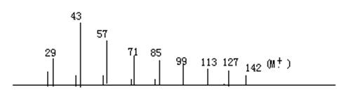
(1) 正癸烷 (2) 2,6-二甲基辛烷 (3) 4,4-二甲基辛烷 (4)3-甲基壬烷
16. 2 分 (1623)
某化合物的质谱图上出现m/z31的强峰, 则该化合物不可能为 ( ）
(1) 醚 (2) 醇 (3) 胺 (4) 醚或醇
17. 2 分 (1624)
在化合物3,3-二甲基己烷的质谱图中, 下列离子峰强度最弱者为 ( )
(1) m/z29 (2) m/z57 (3) m/z71 (4) m/z85
18. 2 分 (1625)
3,3-二甲基戊烷： 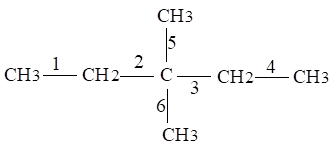
(1) 1和4 (2) 2和3 (3) 5和6 (4) (2)和(3)
19. 2 分 (1626)
某化合物在一个具有固定狭峰位置和恒定磁场强度B的质谱仪中分析, 当加速 电压V慢慢地增加时, 则首先通过狭峰的是: ( )
(1) 质量最小的正离子 (2) 质量最大的负离子
(3) 质荷比最低的正离子 (4) 质荷比最高的正离子
20. 2 分 (1627)
R─Ｘ・+ ──→ R+ + Ｘ・ 的断裂方式为: ( )
(1) 均裂 (2) 异裂 (3) 半异裂 (4) 异裂或半异裂
21. 2 分 (1628)
今要测定14N和15N的天然强度, 宜采用下述哪一种仪器分析方法? ( )
(1) 原子发射光谱 (2) 气相色谱
(3) 质谱 (4) 色谱-质谱联用
22. 2 分 (1708)
溴己烷经b均裂后, 可产生的离子峰的最可能情况为: ( )
(1) m/z93 (2) m/z93和m/z95 (3) m/z71 (4) m/z71和m/z73
23. 2 分 (1709)
在下列化合物中, 何者不能发生麦氏重排? ( )
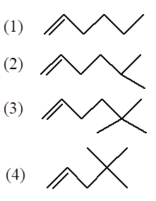
24. 2 分 (1710)
一种酯类(M=116), 质谱图上在m/z57(100%), m/z29(27%)及m/z43(27%)处均有离子峰, 初步推测其可能结构如下, 试问该化合物结构为 ( )
(1) (CH3)2CHCOOC2H5 (2) CH3CH2COOCH2CH2CH3
(3) CH3(CH2)3COOCH3 (4) CH3COO(CH2)3CH3
25. 5 分 (1866)
某化合物在质谱图上出现m/z 29,43,57 的系列峰, 在红外光谱图官能团区出现如下吸收峰: >3000cM-1 ;1460cM-1 ,1380cM-1 ,1720cM-1.则该化合物可能是: （ ）
(1)烷烃 (2) 醛 (3)酮 (4)醛或酮
26. 2 分 (1867)
某化合物的MS图上出现m/e74的强峰，IR光谱在3400～3200cM-1有一宽峰，1700～ 1750cM-1有一强峰，则该化合物可能是 （ ）
（1）R1－（CH2）3－COOCH3
（2）R1－（CH2）4－COOH
（3）R1－（CH2）2－CH－COOH
|
CH3
（4）（2）或（3）
27. 5 分 (1868)
某化合物 相对分子质量Mr＝102，红外光谱指出该化合物是一种酯。质谱图上m/z 74处出现一强峰。则该化合物为 （ ）
（1）CH3CH2COOC2H5 （2）(CH3)2CHCOOCH3
（3）CH3(CH2)2COOCH3 （4）CH3COOC3H7
28. 5 分 (1869)
某一化合物 相对分子质量为72，红外光谱指出该化合物含有一个羰基吸收峰。则该化合物可能的分子式为 （ ）
（1）C4H8O （2）C3H4O2 （3）C3H6NO （4）（1）或（2）
29. 2 分 (1870)
化合物 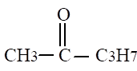
（1） m/z 15 （2）m/z 29 （3）m/z 43 （4）m/z 71
30. 2 分 (1871)
用质谱法分析无机材料时，宜采用下述哪一种或几种电离源? （ ）
（1） 化学电离源 （2） 电子轰击源
（3） 高频火花源 （4）（2）或（3）
31. 1 分 (1872)
在某化合物的质谱上，M和(M＋2)峰的相对强度约为3：1，由此，大致可以推断该化合物存在 （ ）
（1）氧的同位素 （2）硫的同位素 （3）溴的同位素 （4）氯的同位素
32. 1 分 (1873)
某化合物质谱图中，M和(M＋2)的相对强度大致相当，由此，可以确定该化合物含（ ）
（1）硫 （2）氯 （3）溴 （4）氮
33. 1 分 (1874)
在丁烷的质谱图中，M对(M＋1)的比例是 （ ）
（1）100:1.1 （2）100:2.2 （3）100:3.3 （4）100:4.4
34. 1 分 (1875)
在一张质谱图中，M：(M＋1)为100：24，可能存在的碳原子数约为 （ ）
（1）2 （2）11 （3）22 （4）24
35. 1 分 (1876)
在C100H202中，M对(M＋1)的相对强度之比是 （ ）
（1）100:1.1 （2）100:11 （3）100:100 （4）100:110
二、填空题 ( 共20题 )
1. 2 分 (1621)
某化合物相对分子质量M=142, 质谱图上测得M+1/M=1.1%(以轻质同位素为100时, 某些重质同位素的天然强度是: 13C: 1.08; 2H: 0.016; 15N: 0.38), 则该化合物的经验式是:（ ）
(1) C8H4N3 (2) C4H2N2O4 (3) CH3I (4) C11H10
2. 5 分 (2043)
质谱计的磁偏转分离器可以将 _________ 加以区分，因此它是一种 _________分析器。而静电偏转分离器可以将 _______ 加以区分，因此它是一种 _________ 分析器。
3. 2 分 (2044)
CO2经过质谱离子源后形成的带电粒子有 CO2+、CO+、C+、CO22+等，它们经加速后进入磁偏转质量分析器，它们的运动轨迹的曲率半径由小到大的次序为 _______ 。
4. 2 分 (2108)
质谱仪的分辨本领是指�覃覃覃覃覃覃覃覃覃覃覃覃覃覃覃�的能力.
5. 2 分 (2511)
高分辨质谱仪一个最特殊的用途是获得化合物________________________。
6. 2 分 (2512)
质谱图中出现的信号应符合氮规则，它是指
7. 2 分 (2513)
在电离室生成的碎片离子比在飞行过程中生成相同碎片离子的动能_____________, 偏转程度____________________________, 出现的m/z值_____________________ .
8. 5 分 (2514)
丁苯质谱图上m/z134, m/z91和m/z92的峰分别由于_____________________
____________________________和_______________________过程产生的峰.
9. 5 分 (2515)
在有机化合物的质谱图上, 常见离子有__________________________________
出现, 其中只有_____________________________________是在飞行过程中断裂产生的.
10. 5 分 (2517)
某化合物分子式为C4H8O2, M=88, 质谱图上出现m/z60的基峰.则该化合物最大可能为__________________________.
11. 2 分 (2519)
相对分子质量的奇偶性与组成分子的元素及原子的数目有关.当相对分子质量为偶数时,必含_________个氮原子; 当相对分子质量为奇数时, 必含_______________个氮原子.
12. 2 分 (2801)
CH3CH2COCH3和CH3(CH2)3CH3应用低分辨率质谱仪,所作的质谱图有一个较为明显 的差别, 在m/z为______时,前者显________峰,后者显___________峰。
13. 2 分 (2802)
除同位素离子峰外,分子离子峰位于质谱图的___________区,它是由分子失去________ 生成的, 故其质荷比值是该化合物的________________。
14. 2 分 (2803)
同位素离子峰位于质谱图的最高质量区, 计算___________与___________的强度比, 根 据________表确定化合物的可能分子式。
15. 2 分 (2804)
因亚稳态离子峰是亚稳离子在离开_________后碎裂产生的, 故在质谱图上____于其真 实质荷比的位置出现.它的出现可以为分子的断裂提供断裂途径的信息和相应的____离 子和_____离子。
16. 2 分 (2805)
m/e142的烃的可能分子式是_________________.各自的M 和M+1的比例是_______。
17. 5 分 (2806)
对含有一个碳原子和一个氯原子的化合物,可能有的同位素组合是_________________ ___________________,它们所对应的分子离子峰是_______________________。
18. 5 分 (2807)
考虑到12C和13C的分布,乙烷可能的分子式是_______________________________. 这些同位素分子的分子离子值m/z分别是________________________________。
19. 2 分 (2808)
一个二溴化合物中可能的同位素组合是_____________________________________; 其M,（M+2）,（M+4）的相对强度比是___________。
20. 2 分 (4433)
在某化合物的质谱图上, 检出其分子离子峰的m/e为265, 从这里可提供关于______ ________________________________信息.
三、计算题 ( 共17题 )
1. 2 分 (1629)
下述电离源中分子离子峰最弱的是 ( )
(1) 电子轰击源 (2) 化学电离源
(3) 场电离源 (4) 电子轰击源或场电离源
2. 5 分 (3126)
某有机物的质谱峰有以下数据： m/z = 73 为分子离子峰
m/e 58 73 74
相对强度（基峰％） 100 23 1.1
试在以下三种化合物范围内指出最可能的分子式。已知各元素同位素强度比为：
13C 1.11 , 17O 0.04
15N 0.37 , 2H 0.015
三种化合物是 C2H7N3、C3H7NO、C4H11N
3. 5 分 (3127)
欲将摩尔质量分别为 260.2504、260.2140、260.1201 和 260.0922g/Mol 的四个离子区分开，问质谱计需要有多大的分辨本领。
4. 5 分 (3128)
在某烃的质谱图中 m/z57 处有峰，m/z32.5 处有一较弱的扩散峰。则 m/z 57的碎片离子在离开电离室后进一步裂解，生成的另一离子的质荷比应是多少？
5. 5 分 (3135)
在化合物 CHCl3的质谱图中，分子离子峰和同位素峰的相对强度比为多少？
6. 5 分 (3139)
在一可能含C、H、N的化合物的质谱图上，M : M + 1 峰为 100 : 24 ，试计算该化合物的碳原子数。
7. 5 分 (3383)
在C100H202中, (M+1)/M为多少? 已知13C强度为1.08; 2H为0.02.
8. 5 分 (3384)
试计算CH3SH中(M+2)/M的值. 已知13C、2H和 34S的强度分别为1.08,0.02和4.40。
9. 5 分 (3385)
试计算下列分子的(M+2)/M的值:
(1) 溴乙烷 C2H5Br
(2) 氯苯 C6H5Cl
(3) 二甲亚砜 C2H6SO2
10. 5 分 (3386)
试计算下列化合物的(M+2)/M和(M+4)/M的值:
(1) 二溴甲苯
(2) 二氯甲烷
11. 5 分 (3387)
已知亚稳离子峰的m/e为158.2, 其离子的m/e为187, 试问在正常情况下裂解，m/e158.2峰的真实质量为多少?
12. 2 分 (3648)
将 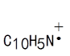 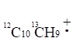
13. 2 分 (3649)
m/z为500的离子，在分辨率为1万的质谱仪上可与相差多少质量单位的离子分开？
14. 2 分 (3650)
用质谱仪辨别分子氧和硫，需要多大的分辨率？相对原子质量：O：15.994914；S：31.972074）。
15. 3 分 (3651)
甲醇在M/e＝15、28、29、30、31和32处有质谱峰。在M/e＝27.13处存在一条 宽而强度低的亚稳离子峰。试确定子离子和母离子。
16. 5 分 (3652)
以最大强度同位素为100，13C的天然强度是1.11，37Cl的天然强度为32.5，试计算含有一个碳原子和一个氯原子的化合物的M、(M＋1)、(M＋2)、(M＋3)峰的相对强度。
17. 2 分 (3653)
试计算当加速电压为6000V时，质量为100的一价正离子在1.2T的磁场中运行轨迹 的半径。（1单位正电荷＝1.6×10－19C）
四、问答题 ( 共50题 )
1. 5 分 (2516)
试述质谱仪的主要部件及其功能.
2. 5 分 (2518)
某化合物分子式为C10H12O, 质谱图上出现m/z105的基峰, 另外有m/z51, m/z77,m/z120和m/z148的离子峰, 试推测其结构, 并解释理由.
3. 10 分 (4007)
某有机化合物在 95% 乙醇中测其紫外光谱得lMax 为290nM, 它的质谱、红外（液膜）光谱和氢核磁共振波谱如下图。试推定该化合物的结构，并对各谱数据作合理解释。
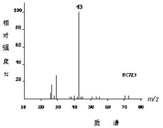
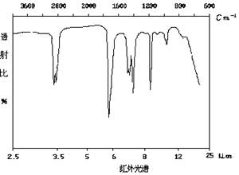
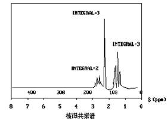
4. 10 分 (4008)
某有机化合物在紫外光区的 205nM 以上没有吸收，它的质谱、红外（纯液膜）和
氢核磁共振谱如下图。试推定该化合物的分子结构，并对各谱数据作合理的解释。
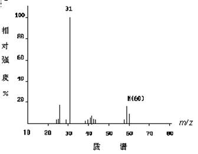
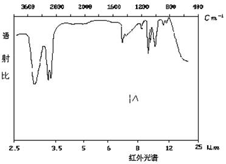
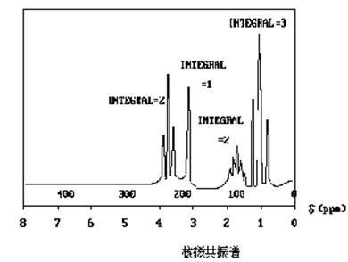
5. 5 分 (4025)
某有机化合物的结构，可能是 A 或 B，它的质谱中出现m/z29和m/z57 峰，试推测该化合物是 A 还是 B？用符号表示生产 m/z 57 峰的裂解方式。
(A) ＣＨ3- ＣＨ2- Ｃ - ＣＨ2- ＣＨ3
‖
Ｏ
(B) ＣＨ3- ＣＨ2- ＣＨ2 - Ｃ - ＣＨ3
‖
Ｏ
6. 5 分 (4104)
某有机化合物的结构，可能是 A 或 B，它的质谱中出现m/z29和m/z57 峰，试推测该化合物是 A 还是 B？用符号表示生产 m/z 57 峰的裂解方式。
(A) ＣＨ3- ＣＨ2- Ｃ - ＣＨ2- ＣＨ3
‖
Ｏ
(B) ＣＨ3- ＣＨ2- ＣＨ2 - Ｃ - ＣＨ3
‖
Ｏ
7. 5 分 (4105)
说明指导含 C、H 和 N 化合物的分子离子的m/z 的规则。若化合物中氧的存在是否会使上述规则无效？
8. 5 分 (4106)
在低分辨质谱中, m/z 为 28 的离子可能是 CO、N2、CH2N、C2H4 中的某一个。高分辨率质谱仪测定值为 28.0227；试问上述四种离子中哪一个最符合该数据？
已知：各个相对原子质量分别为 C: 12.0000；H: 1.0080；N: 14.0067；O: 15.9994。
9. 5 分 (4108)
有一束含有各种不同 m/z 值的离子在一个具有固定狭缝位置和恒定电压 V 的质谱仪中产生，磁场强度B慢慢地增加，首先通过狭缝的是最低还是最高 m/z值的离子？为什么?
10. 5 分 (4119)
一台普通的色谱仪和一台普通的质谱计要联结起来进行色质联用测定，在联结两种仪器时最主要需要考虑和解决的问题是什么？
11. 5 分 (4426)
在化学文献中, 乙烷分子离子通常写作
H H
ï ï��
[H-C-C-H]・+
ï ï��
H H
试评论这个公认的代表式.
12. 5 分 (4427)
写出乙烷分子中C-Cs键均裂、异裂、半异裂的反应式.
13. 5 分 (4428)
考虑12C和13C的分布, 写出乙烷可能的分子式?
14. 5 分 (4429)
试说明庚烯-3(M=98)质谱中, m/e70碎片离子产生的过程, 写出相关裂解方程式.
15. 5 分 (4430)
丁酸甲酯(M=102),在m/e71(55%), m/e59(25%), m/e43(100%)及m/e31(43%)处均出现离子峰, 试解释其来历.
16. 5 分 (4431)
如何获得不稳定化合物的分子离子峰?
17. 5 分 (4432)
某化合物在最高质量区有如下三个峰: m/e225, m/e211, m/e197.试判断哪一个可能为分子离子峰.
18. 5 分 (4434)
试判断化合物CH3-CO-C3H7在质谱图上的主要强峰, 并作简明解释.
19. 5 分 (4435)
某化合物质谱图上的分子离子簇为: M(89)17.12%; M+1(90)0.54%; M+2(91)5.36%. 试判断其可能的分子式.
20. 5 分 (4436)
某化合物质谱图上的分子离子簇为: M(140)14.8%; M+1(141)1.4%; M+2(142)0.85%. 试确定其分子式中所含的主要元素及可能的个数.
21. 5 分 (4437)
某化合物相对分子质量M=108,其质谱图如下, 试给出它的结构, 并写出获得主要碎片的裂解方程式.
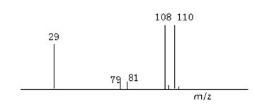
22. 5 分 (4446)
一个硝基化合物, 其分子式为C3H6ClNO2, NMR图如下, 试推测它的结构.
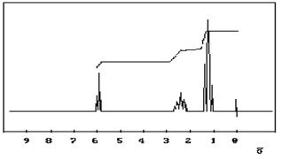
23. 10 分 (4757)
下面列出C2H6O的质谱数据，试鉴定此两异构体。
（1） m/z 46 45 31
相对强度 16 50 100
（2） m/z 46 45 31
相对强度 61 100 5
24. 10 分 (4758)
预测化合物CH3COC3H7的主要断裂过程以及在质谱上的主要离子峰。
25. 10 分 (4759)
预测化合物CH3CH2CH2CH2CHO的主要断裂过程以及在质谱上的主要离子峰。
26. 10 分 (4760)
预测化合物CH3CH2F的主要断裂过程以及在质谱上的主要离子峰。
27. 5 分 (4761)
预测化合物CH3CH2OH的主要断裂过程以及在质谱上的主要离子峰。
28. 10 分 (4762)
预测化合物CH3CH2Br的主要断裂过程以及在质谱上的主要离子峰。
29. 5 分 (4763)
今有一含四个碳原子的胺，其质谱数据如下：
m/z 29 41 44 58 73
相对强度 9.1 9.4 100.0 10.0 1.2
试问它是什么化合物？
30. 5 分 (4764)
某化合物在最高质量区有如下几个离子峰：m/z=201，215，216，试判断其中 哪一个峰可能为分子离子峰？你如何确证它？
31. 2 分 (4765)
一个化合物的分子离子峰已确证在m/z151处，试问其结构能否是
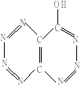
为什么？
32. 2 分 (4766)
试写出从分子离子上脱去的常见碎片：（M－1），（M－2）及（M－15～20）。
33. 2 分 (4767)
从某共价化合物的质谱图上，检出其分子离子峰m/z231，从这里你获得什么信息？
34. 5 分 (4768)
写出氯仿中所有12C、13C、35Cl 、37Cl可能的同位素组合及它们在质谱图上的分子离子区内提供的同位素峰。
35. 5 分 (4769)
一个化合物可能是4－氯基辛烷或是3－氨基辛烷，在它的质谱图上最大强度的峰出现 在 M/e58（100％）和M/e100（40％）处，可能的结构是哪一个，原因是什么？
36. 5 分 (4770)
在质谱中甲烷有关的m/z与相对强度列表如下，请用方程式表示下列碎片的形成及解 释它们的相对强度
m/z 1 2 12 13 14 15 16 17
相对强度/1% 3.3 0.2 3.0 8.0 16 85 100 1.1
37. 5 分 (4771)
说明化合物CH3OCOCH2CH2CH2CH2N（CH3）2在质谱中出现的主要峰（m/z=74，58，59，128，159）的成因。
38. 5 分 (4772)
说明化合物CH3COCH（CH3）CH2C6H5在质谱中出现的主要峰（m/z=91，43，147，162）的成因。
39. 5 分 (4773)
写出丙酰胺的麦氏重排历程，为什么会导致形成一个质荷比为奇数的（m/z＝59）碎片峰？
40. 5 分 (4774)
用麦氏重排表示CH3CH2CH2COCH3的m/z＝58峰的由来.
41. 5 分 (4775)
用麦氏重排表示CH3CH2CH2COOCH3的m/z＝74峰的由来.
42. 5 分 (4776)
用麦氏重排表示CH3CH2CH2COC2H5的m/z＝88峰的由来.
43. 10 分 (4778)
某化合物的MS谱图如下图，IR谱在1700cM-1处有强吸收峰，NMR谱在 d1.25(3H，三重峰）d1.82（6H，单峰）和 d4.18(2H，四重峰）。 写出该化合物的结构式。
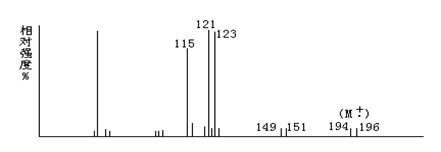
m/z
44. 10 分 (4779)
某未知物的分子式为C5H12O，某MS、IR和NMR谱图如下，UV> 200nM没有吸收， 推测该化合物的结构。
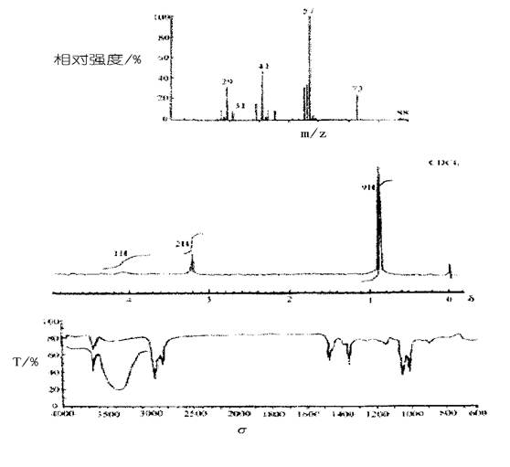
45. 10 分 (4780)
某固体化合物，其质谱的分子离子峰（m/z）在206。它的IR吸收光谱在3300～ 2900cM-1有一宽吸收峰，在1730cM-1和1710cM-1有特征吸收峰。1H－NMR在d＝1.0有3H双峰，2.1有总共3个H 的多重峰，3.6有2H单峰，7.3有5H单峰和11.2有1H单峰。试根据上述三谱推测该化合物的结构。
46. 10 分 (4777)
一无色液体试样，有蒜臭味，元素分析结果测得相对分子质量为78，其MS和IR谱如下，试推断其结构：
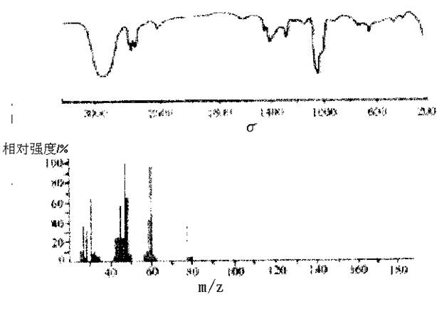
47. 10 分 (4781)
某有机物的UV和MS数据及IR、NMS、MS谱图如下，推测该化合物的结构。
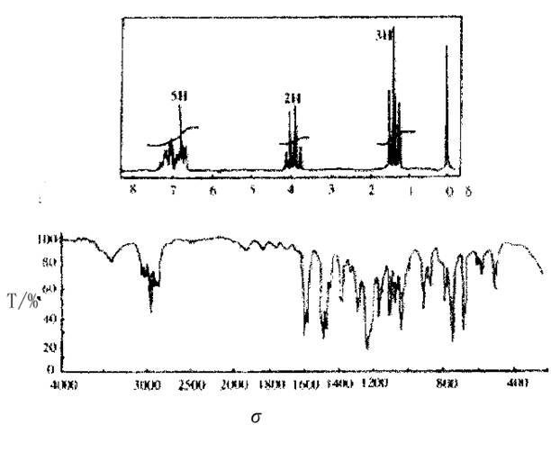
48. 5 分 (4782)
在某化合物的质谱中，M（M/e＝86），(M＋1)和(M＋2)峰的相对强度分别为18.5、 1.15和0.074。从下列同位素强度比数据中确定未知物的分子式。
同位素强度比/100％
分子式 (M+1) (M+2)
C4H6O2 4.50 0.48
C4H8NO 4.87 0.30
C4H10N2 5.25 0.11
C5H10O 5.60 0.33
C5H12N 5.98 0.15
C6H14 6.71 0.19
49. 5 分 (4783)
从某化合物的质谱图上,检出其分子离子峰m/z102，M和M＋1峰的相对强度分别为 16.1和 1.26。从这里你能获得什么信息？
50. 10 分 (4784)
某化合物的分子式为C4H10O2，IR数据表明该化合物有羰基C＝O，其质谱图如下所
示， 试推断其结构。
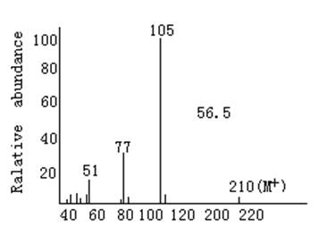
m/z